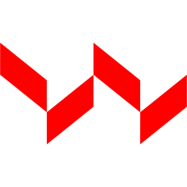
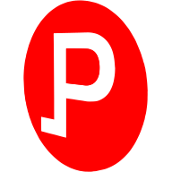
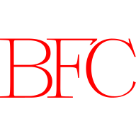
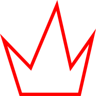
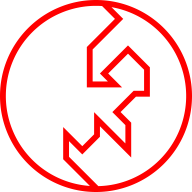

Mostyn Griffith
About
Mostyn is a flexible designer. He likes to make work for but is not limited to: artists, non-profits, student associations, branding studios, multinationals, startups, as well as his family and friends.
He is currently pursuing a BFA in Graphic Design at the Rhode Island School of Design in the graduating class of 2018. You can contact him here by email.
You can find him on Instagram or even on that other website known as LinkedIn. Otherwise here is his resumé.
Collab Campaign
Collab is a campaign that focuses on creating a solidarity among workers of all backgrounds.
The primary mark is an abstraction of two shirt collars. This is because different sectors of labor can be grouped by a different color collar. (e.g. Blue for industrial work and Pink for care and service work.)
By utilizing the collar as a central visual motif, the logo is able to be inclusive of the various industries that people work in.
For the logotype, I hand drew the lettering to match the sharpness of the collar logos and motifs. I chose to make it a serif to contrast the heaviness of the bold logo and headers.
Scroll on the image for more →


The campaign website features information on each of the industries as delineated by their respective collar color.
Scroll on the image for more →


The first campaign initiative is the Worker's Voting Fund. Many socioeconomically disadvantaged workers are not able to vote since they live paycheck to paycheck. This initiative would fund the expansion voting locations to economically disadvantaged neighbourhoods and workplaces.
Scroll on the image for more →

“It is neither radical nor revolutionary if it is unaccessible to the poor.” In its current state, cryptocurrencies are a nebulous place that is used by many but understood by a few. The second initiative proposes a cryptocurrency that would benefit workers and their representatives.
Wage theft is one of the largest forms of theft that is commited in America and throughout the world. This form of theft disproportionately affects young workers, women, people of color, and immigrant workers. Wagecoin would be able to run workers' contracts through a blockchain that guarantees that they are paid what was initially agreed upon between them and their employer.
Scroll on the image for more →


Museum of Sex
The Museum of Sex is a visual identity project created for Richard Rose's Brand Identity course at RISD. This project involved taking an existing museum's brand identity and revamping it in its entirety.

The website features a piece of the mark as a viewport for which the carousel moves through. I felt that using the mark in this way evoked voyeurism which is related to both sex and the notion of being a viewer in the museum gallery.
Scroll on the image for more →


For a brand extension, I decided that the Museum of Sex could partner with Spotify to advertise an exhibit on the history between music and sex. Spotify would feature interactive album art in which you can learn more about the artist and the exhibition at the Museum of Sex.
Users would also be able to use their phones to scan certain tags on the wall of the museum to hear a specific song and learn information about that artist during a guided audio tour.
Scroll on the image for more →


The following images contain alternate logo designs and other remaining parts of the brand identity process.
Scroll on the image for more →


Evan Roth
LANDSCAPE WITH A RUIN is a photography series by the artist Evan Roth that documents the often remote settings where the internet submarine cables meet the land. This book is an exposition of Roth's photos from a recent trip to Capetown, South Africa.
Flare

I was approached by two students from Brown to help them build FlairTime, a social app centered around creating events and having users collaboratively document events. This included a total rebranding of the app, changing its name to Flare, and a close collaboration with the developer on the user interface of the application.
The rebranding process involved changing the name of the app from Flairtime to Flare, which introduced more energy into the brand. I thought that the act of creating and sharing an event with friends could be associated with the image of launching a flare.
The logo was changed from a simple blue flame to a mark that contains both the "F" in Flare as well as a flare in the counterform.
Scroll on the images for more →
UX Issues
The main issues with the original Event Tile user interface were problems with the visual hierarchy of user's content, event information, and a general lack of consideration for driving user interaction.

UX Solutions
The new Event Tiles optimize a user's viewing experience by being able to remove unecessary modules when certain data is not present. An example of this is if less than 5 people are joined, then the Guest Bar does not appear. Early on in an event, this allows the action bar and gallery to be more visible to entice both viewing and interaction.

These modules have been designed to increase interaction by setting larger action icons within the gallery pane alongside user content. What this does, especially early on during an event, is to entice users to fill the gallery with their content.

Content begins from a user uploading content via their camera or camera roll. They would then be able to post content on the Event Page which features all attending guests' uploaded content.
Find Flare here on the app store.

Politicoin
Politicoin is a website that attempts to shift the cryptocurrency conversation away from its traditional associations of free market economics into the space of politics and representative democracy.
Visit the website here.

Brown Finance Club
The Brown Finance Club contracted me to both brand and create their website. For them, I hand drew a wordmark beginning with Bookmania Light as a starting reference point. From there, I decided that a gradient mix between Brown University's red and a cool blue evoked the shifting relationships and dynamism of the economy at large.
Scroll on the image for more →


Editorial Design for the Screen
Uncertain Futures (Interactive)
This mobile website was made in collaboration between me and John Sasner, a student from Parsons. We created a digital zine that contextualizes the emergence of modern machine labour and the replacement of human workers throughout various industries.
Mars Landing
This is a speculative design object wherein a citizen's blinds are in the direct control of a government entity. A citizen can be subjected to any news and other pertinent pieces of information that a government may want to project.
The use case in this instance would be NASA's first successful manned mission to Mars – a news story that any government would want to directly broadcast to its citizens to a patriotic and emboldening effect.
Street Light Politic
I chose the streetlamp as a subject for this book, examining its political implications. First I was interested in light's relationship to crime and whether or not it was a device used to discourage crimes. I then imagined possible futures of the streetlamp – whether or not it could be used as a tool for governments to effectively crack down on any and all crimes and possibly even dissent.


Bad Precedent
This is a publication centered around the unconstitutional internment of Japanese citizens during World War II. A reminder of the xenophobic hysteria and racism that we as a nation can commit. The publication features a compilation of interviews with various Japanese-Americans who lived through the internment.
All photographs taken by Ansel Adams and sourced from the Library of Congress.


Epigenia
I and Adrian Medina decided to collaborate on an idea that involved ecology, urban-planning, and world-building. We created a fictitious island-nation-state titled Epigenia as a means to communicate a green transition story.

We decided to flesh out one of the pivotal characters in the narrative, Grete Li, a benevolent entrepreneur set out to overhaul the failing, unsustainable nation of Epigenia, turning it into a prosperous eco-state. In addition to this I created a visual timeline (displayed above) to accompany the interview as a means to detail pivotal events in time.

The final configuration for this piece was a projected installation for Design Studio 4 taught by Benjamin Shaykin.

RAID
These figures and ephemera were made for the RISD Asian Intersections and Diaspora (RAID) club. They were created and handed out to attendees of the first general meeting. Done in collaboration with Greta Skagerlind.


Various Posters


大鼻

Pity

Malcolm Grear Tribute Exhibit at RISD


Posters for Floral

Interactive poster for Design Studio 4
Cornell Sustainability

The Cornell Sustainability Consultants contracted me to design an identity for them. I wanted the logo to reflect notions of the circular economy and feedback cycles.
This set of posters were designed for Cornell activist group, Climate Justice Cornell. The movement set out to protest against the administration's decision to abandon former Cornell President David Skorton's Carbon Neutrality plan for 2035.
Scroll on the image for more →